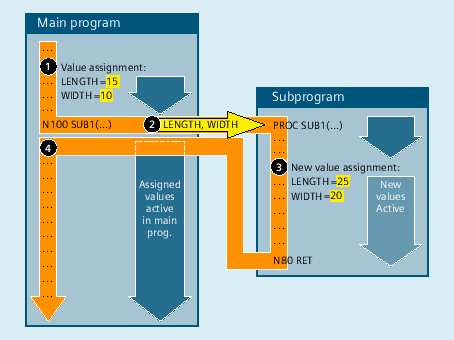

In a call-by-value parameter transfer, the calling program only transfers the value of a variable to the subprogram. Thus the subprogram is not given direct access to the variable. Only the value visible in the subprogram is modified when the parameter value is changed, while the value of the variables defined in the calling program remains unchanged. As a consequence, the call-by-value parameter transfer does not affect the calling program.
The following figure illustrates call-by-value parameter transfer using an example:
① | Value assignment to the variables LENGTH and WIDTH in the calling program. |
② | When the SUB1 subprogram is called, the values of the two variables LENGTH and WIDTH are transferred to the subprogram. |
③ | If the values transferred change due to a new value assignment, the new values only apply to the subprogram. |
④ | After return from the subprogram, the values last assigned in the calling program are valid again. |
A subprogram with call-by-value parameter transfer is defined using the PROC keyword followed by the name of the program and a complete list of all the parameters with their type and name. The definition operation must appear in the first program line:
PROC <ProgName>(<Par1Type> <Par1Name>[=<InitValue>],<Par2Type> <Par2Name>[=<InitValue>],...)
Subprograms with parameter transfer must be declared with the keyword EXTERN (external) before they are called in the main program.
→ See Chapter "Subprogram call with parameter transfer (EXTERN)".
The actual subprogram call is made via the program name and specification of the transfer parameters.
→ See Chapter "Parameter transfer".
| Definition operation at the beginning of a program |
| Name of the program |
| Data type of the 1st transfer parameter (e.g. REAL, INT, BOOL) |
| Data type of the 2nd transfer parameter |
... | ... |
| Name the 1st transfer parameter |
| Name the 2nd transfer parameter |
... | ... |
| Value for the initialization of the parameter (optional) Parameters that are not specified in the call of the subprogram are then assigned the initialization value defined in the subprogram definition instead of "0" as the default value. |
Definition of a subprogram with three parameters of type REAL and with default values:
Program code |
|---|
| PROC SUB_PROG(REAL LENGTH=10.0, REAL WIDTH=20.0, REAL HEIGHT=30.0) |
| ... |